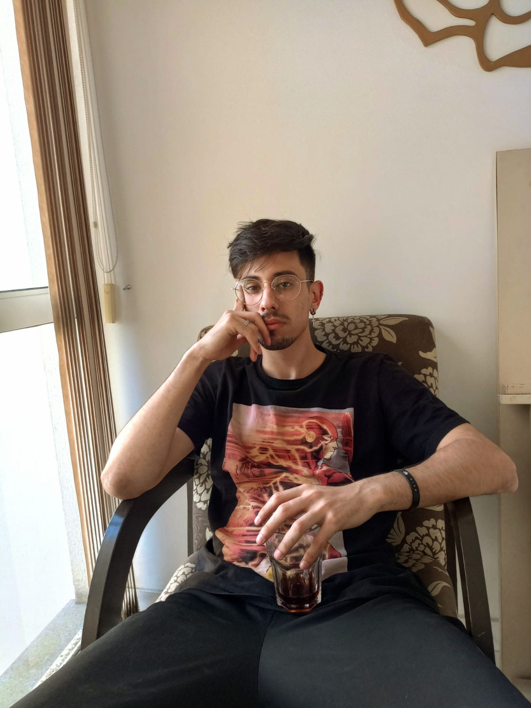

Sérgio Ortória Simões

Objetivos
Oportunidade de mostrar minha capacidade na area de programação: HTML, CSS, JS ou Python,
Linguagens e conhecimento:
Sobre mim:
Olá meu nome é Sérgio Ortória Simões, tenho 22 anos de idade e sou tecnico em TI a 5 anos.
Primeiramente me desenvolvi na montagem e manutenção de computadores, que foi onde me apaixonei pela TI,trabalho no ramo da Tecnologia desde meus 16 anos de idade.
Ao começar a me aventurar na faculdade, aprendi HTML, CSS e JS. Atualmente trabalho na área do suporte ao cliente, dando consultoria ao ERP da TOTVS.
Manutenção no banco de dados dos clientes via SQL Sobre mim: Sou autodidata, acredito que com foco e persistência eu posso conseguir tudo que eu quero, aprendo muito rápido e sou muito comunicativo, sei liderar e trabalhar em equipes, se você procura uma pessoa pra somar em sua empresa, pode conta comigo.
Certificações:
- Analise e Desenvolvimento de Sistemas
- - Cursando / 2022
- Curso de ingles avançado
- - Newbold College of Higher Education / 2017
- Curso Técnico em Informática
- - Certificado Cursos Online / 2019
- Microsoft Windows Server
- - Udemy / 2019
- Fundamentos de Ethical Hacking: curso prático
- - Udemy / 2022
- Fundamentos de Redes
- - Curso em Video / 2021
Experiencias:
Cargos:
- Suporte ao sistema ERP Protheus;
- Infraestrutura SQL interna e externa;
- Controle de Documentos e Acessos;
- Help Desk;
- Suporte ao Cliente;
- Infraestrutura Protheus. - 2022 / Atual

Cargos:
- Técnico especializado em Ti;
- Montagem e manutenção de computadores;
- Atendimento ao cliente presencial/Remoto;
- Help Desk;
- Redes, Criação e manutenção de servidores DHCP - 2020 / 2021.
-
Cargo:
- Auxiliar Técnico - 2017 / 2018